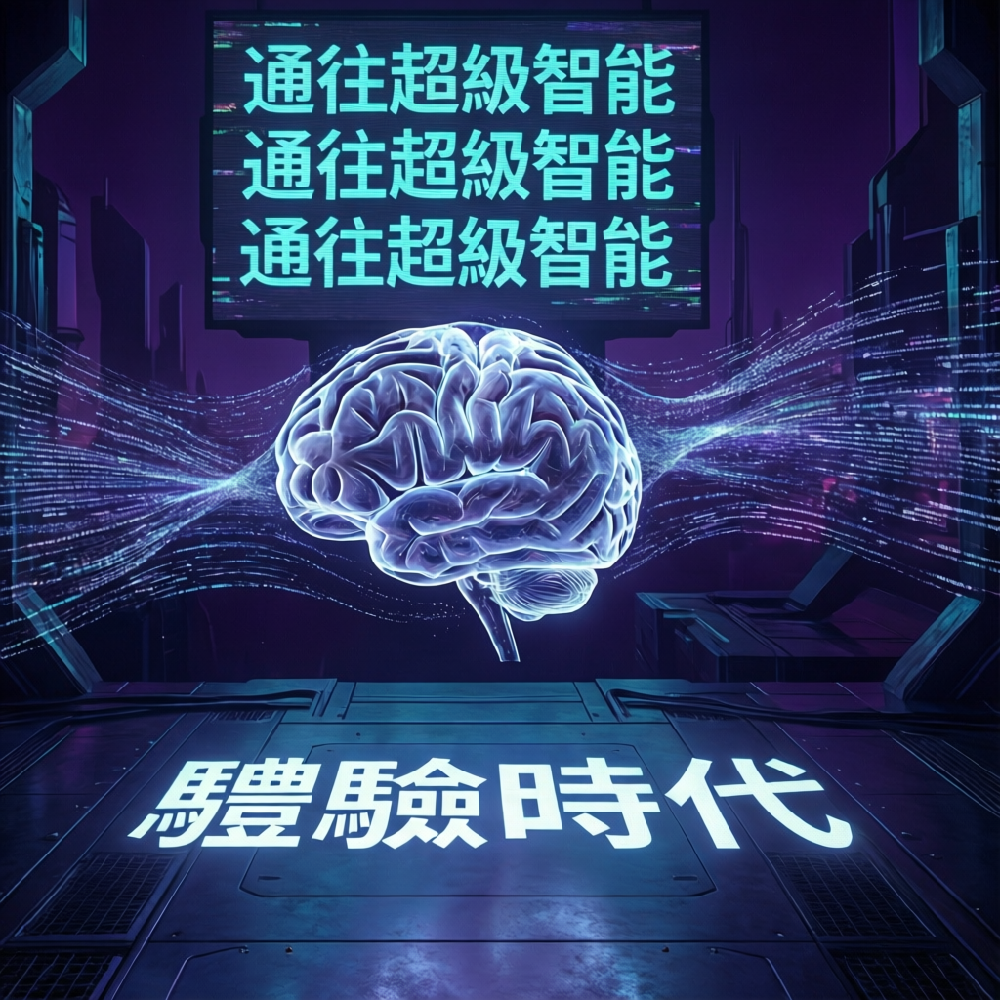

別只盯著大模型了！研究指出，「體驗時代」纔是通往超級智能的真正鑰匙，這項技術突破將重新定義人工智能的發展路徑

本次報告揭示人工智能領域正迎來關鍵轉折。DeepMind研究團隊提出，單純追求大規模語言模型的參數增長已非唯一路徑，「體驗時代」的到來將為產業發展開啟全新篇章。研究指出，透過讓AI系統從真實互動與環境反中持續學習，將能突破現有技術瓶頸，邁向更具適應性的智能形態。
專家分析認為，這一轉變代表AI發展從「靜態知識儲存」向「動態經驗累積」的根本性躍遷，為通往超級智能鋪設了關鍵道路。
數據顯示，研究團隊採用創新架構設計，使AI系統能夠在複雜環境中自主探索並從結果中學習。這種方法與傳統依賴海量文本訓練的模式形成鮮明對比，強調「做中學」的核心價值。
主要技術特點包括：
業界觀察指出，此項技術突破將對多個領域產生深遠影響。從自動駕駛到科學研究，從機器人控制到個人化教育，「體驗驅動」的AI架構展現出廣泛的應用潛力。
研究強調，隨著技術不斷成熟，預期將在以下方向形成突破：
「體時代」的核心理念在於：真正的智能不僅來自於閱讀與記憶，更源於與世界的持續互動與反思。這一轉向可能預示著AI研究從「規模競賽」走向「質量深耕」的新階段。
展望未來，專家分析認為「體驗時代」將成為AI發展的重要里程碑。隨著演演演演算法持續優化與硬體運算能力提升，具備自主學習能力的智能系統有望在多個產業實現規模化部署。
本次報告所揭示的技術方向，不僅為學術研究提供新思路，更為產業應用開闢了廣闊前景。業界預期，未來數年內將見證更多基於體驗學習的創新應用問世，進一步推動人工智能向通用智能邁進。